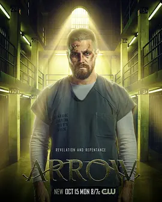

8.1
绿箭侠 第七季
Arrow Season 7
2018
美国
评分 8.1
导演:
詹姆斯·班福德
演员:
斯蒂芬·阿梅尔 / 大卫·莱姆希 / 艾米莉·贝特·理查兹 / 埃克·科伦 / 瑞克·冈萨雷斯
类型:
动作,悬疑,犯罪
剧情简介
在向公众坦白绿箭侠身份并自愿入狱后，Oliver Queen 的世界被彻底颠覆。他被迫放下夜行者的敏锐直觉，以囚犯的身份在冰冷牢墙间生存。走廊里回荡着嘲讽与威胁的脚步声，那些曾被他抓捕的罪犯如今带着仇恨逼近。每一天，他都必须在压抑的环境中计算风险、判断敌意，用最低调的方式维持自己与身边人的安全。监狱外的星城同样危机四伏。团队因他的缺席而四散，却依然试图维持城市的秩序。Felicity 在电脑前通宵不眠，她的焦虑几乎掩饰不住；Diggle 的行动更加冷静，他加入天眼会后面对更深层的地下势力；而全新的敌人“但丁”在暗处操控局势，他的网络复杂难测，让每一次追查都像在迷宫中摸索。尽管囚禁在高墙之内，Oliver 对城市的牵挂从未停止。他在狱中目睹权力角力，也见到自己行为曾带来的连锁反应。即便没有披风和弓箭，他仍试图用方式保护无辜，并避免新一轮混乱被引爆。在看似平静的日子里，他逐渐意识到，这个地方隐藏着改变一切的关键人物与信息。城市的局面在多重力量的拉扯下愈发紧绷。逃亡的 Ricardo Diaz 继续施加威胁，他的报复计划跨越监狱墙壁，让 Oliver 的处境更加凶险。队友们也在道德与责任之间挣扎，每个人都不得不做出艰难决定。随着事件不断发酵，星城的命运再次与 Oliver 牢牢绑在一起。当夜幕降临，狱外与狱内的阴影互相呼应。Oliver 深知自己无法永远被束缚，真正的战斗不仅在钢铁栏杆之外，也在他必须重新定义的“英雄”身份之中。